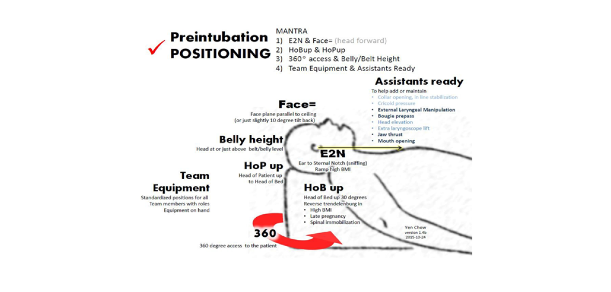
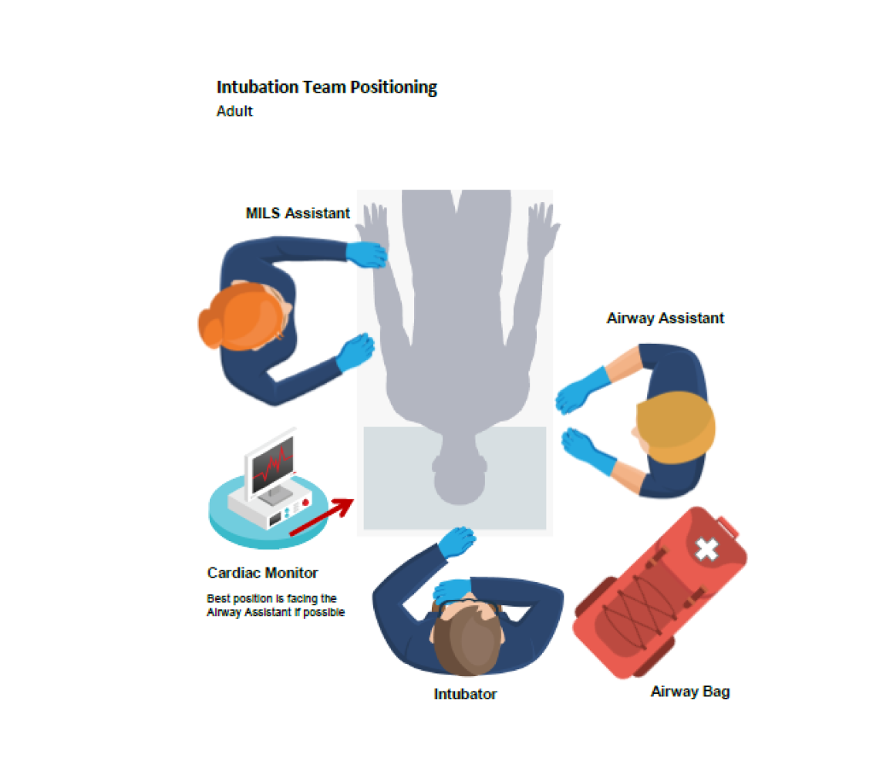
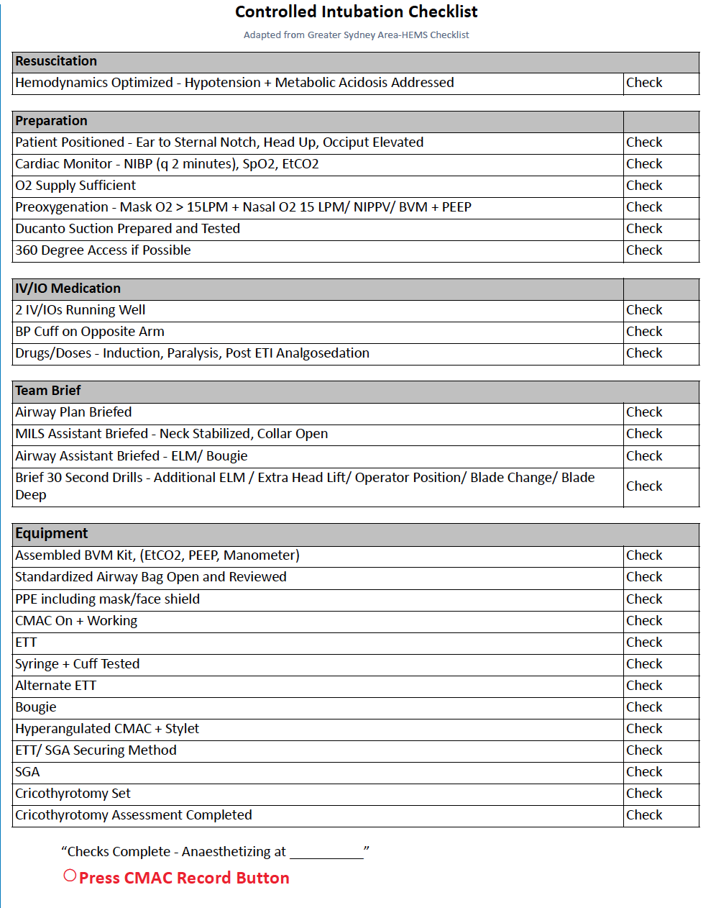
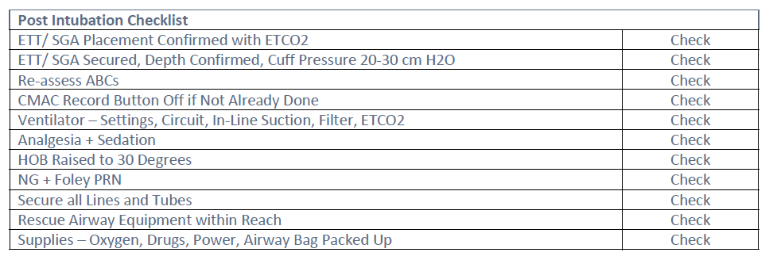

Version 1.03: June 2022
Rationale
Working in the transport setting provides a challenging work place environment. Critically unstable patients
require advanced care, including intubation, in challenging and unfamiliar contexts. The process of intubating
patients in unfamiliar and dynamic settings is complex and many factors potentially contribute to the potential of
an airway failure. These include but are not limited to poor optimization prior to induction, equipment failure,
poor communication, and human error during the intubation process. The goal is to outline a consistent,
structured approach to the rapid sequence induction and intubation of a patient. The adoption of a streamlined,
universal, evidenced based approach to the airway will ensure that any two paramedics are comfortable and
familiar with the intubation process. This standardized approach will ensure a streamlined efficient intubation
process, minimizing failure and planning in advance should failure arise.
Definitions
Intubation attempt: An intubation attempt is defined as the insertion of a laryngoscope or the insertion of any bougie or airway device past the lips for the purpose of securing the airway. First attempt success is not disqualified by necessary adjustments to the depth of the ETT or re-securing it.
Rapid Sequence Induction (RSI): An advanced airway procedure used to achieve endotracheal intubation using a paralytic and an induction agent.
Crash Intubation: Attempted endotracheal intubation without the use of pretreatment, induction or paralytic in the moribund patient.
Sedation Facilitated Intubation (SFI): Attempted intubation using a topical anesthetic and sedative or dissociative agent.
Organizational Goals:
Benchmarks
Organizational Approaches for Intubation
Pre-intubation Patient Positioning

Patient Positioning
Proper patient positioning is an essential aspect of the preparation phase prior to intubation. Proper patient positioning will optimize the view obtained during laryngoscopy, and it will extend the time until hypoxia is encountered. It will also ensure required airway equipment is within reach and there is adequate physical space for the team should further interventions be required included BVM, SGA insertion, or cricothyrotomy. Optimal patient positioning is determined by two major factors: the patient’s physical location within their environment, and the patients specific positioning. The premise of the ideal patient location allows team access 360 degrees around the patient with all required equipment within reach, where the patient is at optimal physical height on an adjustable stretcher and minimizing physical and environmental distractions.
Hierarchy of Intubation Setting
Hospital bed in resuscitation room> Stretcher outside aircraft/ambulance > On the ground at scene call> In back of ambulance or aircraft while stationary or during transport
Patients’ Physical Location
Access to the patient’s airway, IVs, monitor and airway equipment is paramount when deciding the best setting for intubation. We advocate for 360-degree access around the patient under nearly all circumstances. The optimal location is nearly always a resuscitation room where there is adequate room for set up, however on some calls this will not be possible. For scene calls the back of an ambulance or the area outside the aircraft is optimal. Optimal patient positioning is outlined in the figure above. The patient’s head should be at approximately the level of the umbilicus of the intubator, a horizontal line should intersect the patient’s ear and sternal notch; frequently this will require manipulation of the patients head or shoulders using equipment nearby including a SAM splint or bed sheet. The intubator should be at the head of the stretcher and the patient’s face should be horizontal.
Intubation Team Positioning 
The overarching philosophy is to standardize as many aspects as possible regarding the approach to the airway. Ensuring that ‘cognitive noise’ is reduced in stressful situations. That all Ornge paramedics will be familiar and comfortable with the process of intubation regardless of experience in the particular intubating setting or with their paramedic partner.
Team Geography Keys
Airway Bag
The standardized set up of airway equipment is within your standardized airway bag. This ensures that a complete set of equipment is readily available and prepared for a safe intubation or rescue airway management. Airway equipment is organized sequentially within the airway bag to correspond with airway interventions.
Ideally the airway bag should be placed on the intubator’s right. This ensures that both team members will have timely access to any piece of airway equipment or back-up device. The strength of a standardized airway bag is familiarity, the location or setup of airway equipment should only be deviated from the norm in extenuating circumstances.
Airway Checklist
The Ornge intubation checklist should be used on all controlled intubations (RSI, SFI). This tool outlines the expected minimum standard preparation, equipment, and pre-briefing required for a safe intubation attempt and it helps provide the best possible chance at first pass intubation success. It also ensures that bystanders and other health care providers are aware of the airway plan, appropriate backups, and plan for failure. It is important to note that the airway checklist is meant to be a final check following set up for intubation - it should not be used as a recipe to organize equipment or discuss management. This should all be done in the 'prepare and plan' stage. It is analogous to a pilot’s final checks before takeoff or landing-performed rapidly just prior to pushing drugs and starting time zero for intubation. The preparation has already been completed; the role of the checklist is to ensure that nothing has been missed. This requires the team to discuss the roles and expectations of each member; e.g. airway assistant maintain In-line Stabilization (MILS) assistant when required; prior to performing the checklist. The fail plan should include the initial approach to intubation as well as the expected next steps if a difficult airway is encountered. This should include a review of the 30 second drilled responses (below) for actions during the intubation attempt, actions required between intubation attempts, and the predicted approach to subsequent intubation attempts. Another important point is that the checklist should be done in a challenge-response fashion. Essentially this means that once the preparation for intubation is complete, the paramedic who opened and organized the airway bag will read aloud the checklist to their partner who is tasked with checking their partner’s set up. Each point is meant to be a simple check, not a conversation (except for the team brief). In fact, the entire checklist should take no longer than 40-45 seconds with practice.


Preoxygenation
A significant number of intubations fail due to, or are complicated by preventable hypoxia often due to insufficient pre-oxygenation. Adequate pre-oxygenation with 100% O2 maximizing SpO2 >95% (ideally as close to 100% as possible) and denitrogenation, prolongs safe apneic time before the patient becomes hypoxemic. To maximize preoxygenation prior to intubation, a patient should be placed on a non-rebreather plus nasal cannula at flow rate tolerated by the conscious patient or have a bag valve masked placed over their airway for 3-5 mins with adequate mask seal to avoid entraining room air and enough oxygen flow to meet their minute ventilation; i.e. BVM reservoir does not fully collapse on inspiration. Adequate tidal volume is also necessary. If passive oxygenation does not result in adequate pre-oxygenation, positive pressure ventilation (PPV) with BVM should be initiated. This is best started at the decision to intubate ensuring preoxygenation occurs simultaneously with intubation preparation. Further, each patient requires high flow nasal cannula ensuring apneic oxygenation using 15 LPM via nasal prongs. This may not be tolerated by awake patients but should be titrated up as high as tolerated by the patient. Ensure adequate ventilation, RR and chest rise.
Difficulty and/or Hypoxia with intubation (SpO2 <93% during attempt)
Any time there is encountered or anticipated difficulty intubating; one must change a part of the airway strategy in order to address the difficulty. This may occur during the attempt or with the next attempt. It is important to use the most familiar techniques and more familiar equipment during the first attempt by the most experienced intubator when there is anticipated difficulty, or when difficulty is encountered unexpectedly.
If extreme difficulty is anticipated, it is also important to assess the risk and benefit of intubation. Is an alternative approach better given the current team, scope of practice, equipment, drugs, resources and surrounding environment?
Drilled Responses to the Difficult Airway
(Blade is in the mouth but you are having difficulty generating a view of the glottis) If, during intubation, there is difficulty successfully placing the endotracheal tube or if the intubation attempt is aborted due to hypoxia, it is vital the team flawlessly transition to the next phase of the airway management plan as verbalized during the airway checklist briefing. However, it is also vitally important the team take a number of steps to transition from plan A to plan B and to plan C. A number of HEMS organizations have incorporated the concept of ‘30-second drills’ when dealing with airway difficulty. The idea is that after initial stabilization and re-oxygenation (see below), there must be a rapid, coordinated change before a subsequent re-attempt at intubation. This may include changing the operator in charge of intubation, changing an aspect of the patient positioning to improve success, or changing a piece of equipment. After a third unsuccessful attempt, it is very unlikely to achieve success with further airway attempts. At this point a rescue airway should be initiated according to the airway algorithm.
30 Second Drilled Responses to Optimize Attempt at Laryngoscopy (these can be utilized during intubation attempts when encountering difficulty or between intubation attempts):
Initial Responses (intubator’s two hands AND assistant do FIVE things)
Standardized Approach and special considerations
Video-Laryngoscopy
Video Laryngoscopy (VL) should be used for ALL intubations and ALL intubation attempts should be recorded using the VL device. VL with a standard geometry (SG) blade should be used for the first attempt. SG blades can be utilized for direct laryngoscopy if required. If the first attempt fails consider all of the options listed above to optimize your view and consider switching to a hyper-angulated (HA) blade.